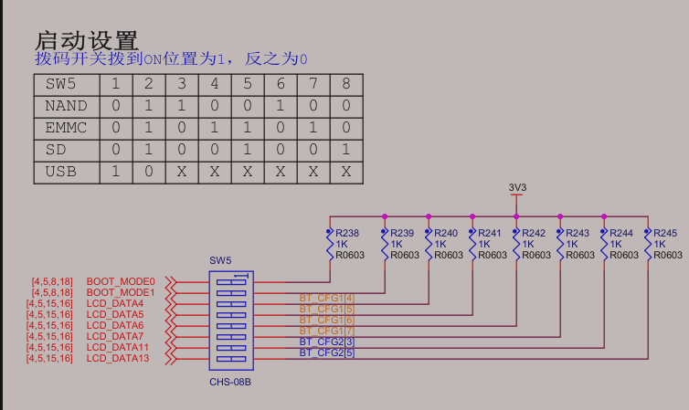
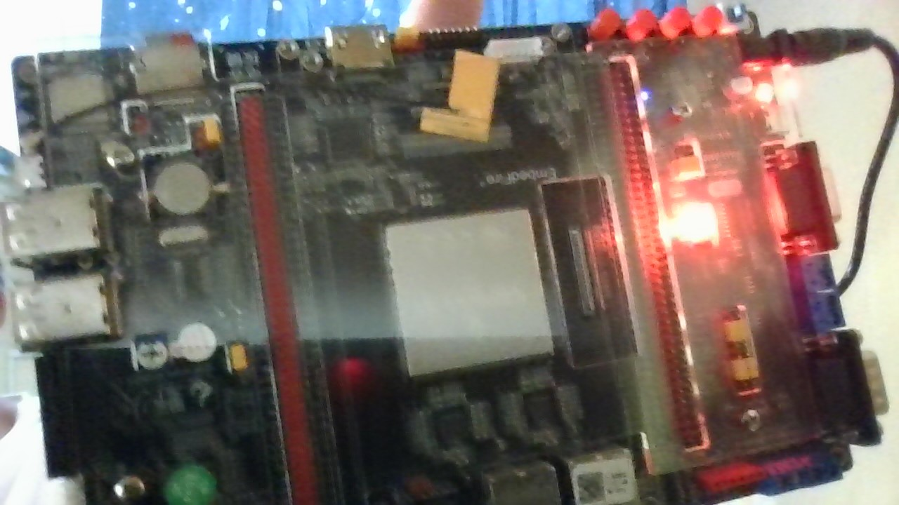

:::info
学习笔记记录，非教程。
:::
- 1. 汇编LED原理分析
- 2. 初始化流程
- 3. 汇编语言实现
- 4. 链接与格式转换
- 5. 使用官方SDK包生成镜像文件
- 6. 安装SDK包
- 7. 烧录到SD卡
- 8. 达成成就【点灯大师】
- 9. 参考资料
1. 汇编LED原理分析
为什么不像STM32那样直接使用c语言？
答：因为ST已经为你用汇编写好了初始化过程，比如初始化时钟等等外设，初始化Ram，设置sp指针，配置好c语言运行环境等等。而一般这些一块CortexA架构的板子是不提供的。
所以我们要使用汇编：
- 初始化一些SOC外设。
- 初始化DDR[1]。
这个I.MX6U倒是不需要。I.MX内部的ROM存放了自己编写的启动代码，这些启动代码可以读取DDR配置信息，并完成其的初始化。
- 设置sp指针，一般指向DDR，设置好C语言运行环境。
2. 初始化流程
具体原理、寄存器详细位讲解可以看正点原子的Linux驱动开发指南。
这里我们对比STM32的IO初始化流程来学习I.MX的初始化流程
2.1. STM32的大致IO初始化流程
- 使能时钟
- 设置IO复用，复用为GPIO
- 配置GPIO的电气属性
- 使用GPIO——利用控制寄存器设置GPIO的输入输出功能
2.2. I.MX6ULL IO初始化
同样的，IO的使用分为两个部分，CONFIG和CONTROL
CONFIG部分，I.MX的每个IO都有两个寄存器来配置，分别是多路复用寄存器（IOMUXC_SW_MUX_CTL_PAD_XX_XX）和配置电气特性的寄存器（IOMUXC_SW_PAD_CTL_PAD_XX_XX）它们在命名的第三个字段加以区分。我们可以查阅正点原子的Linux驱动开发指南以及官方的参考手册查看每一位的意义。
CONTROL部分，也有各种寄存器，来控制IO的各个功能，比如GPIOx_DR寄存器就是控制输入输出的高低电平，共有32位，每一位控制第x组IO各个引脚的高低电平。
使能时钟，CCGR0~CCGR6这7个寄存器控制着6ULL所有外设时钟的使能。（参考《I.MX6UL 参考手册》的第 18 章“Chapter 18: ClockController Module(CCM)”）
总结一下，I.MX6ULL的初始化一个IO流程如下：
- 使能时钟，CCGR0CCGR6这7个寄存器控制着6ULL所有外设时钟的使能。为了简单，设置CCGR0CCGR6这7个寄存器全部为0XFFFFFFFF，相当于使能所有外设时钟。
- IO复用，将寄存器IOMUXC_SW_MUX_CTL_PAD_GPIO1_IO03的bit3~0设置为0101=5，这样GPIO1_IO03就复用为GPIO。
- 寄存器IOMUXC_SW_PAD_CTL_PAD_GPIO1_IO03是设置GPIO1_IO03的电气属性。包括压摆率、速度、驱动能力、开漏、上下拉等。
- 配置GPIO功能，设置输入输出。设置GPIO1_GDIR寄存器bit3为1，也就是设置为输出模式。设置GPIO1_DR寄存器的bit3，为1表示输出高电平，为0表示输出低电平。
3. 汇编语言实现
在了解上述内容后我们可以正式开始写代码了，在Linux环境下新建led.s汇编文件。
内容可以参考如下
/* 点亮led汇编代码 */
.global _start @全局标号
_start:
@1.使能时钟
@查找原理图和参考手册可知，LED1连接GPIO1-io4，GPIO1的时钟属于CCM_CCGR1 CG13（26-27位）
ldr r0, =0x020c406c @将寄存器地址加载到r0
ldr r1, =0xFFFFFFF @为了方便打开全部时钟，相应的功耗也有所增加
str r1, [r0] @将r1中的值存入以r0中的值为地址的寄存器中
2.设置io引脚复用为gpio
ldr r0, =0x020e006c @将寄存器地址加载到r0
mov r1, #5 @将寄存器要设置的值加载到r1
str r1, [r0]
@3.设置io电气属性
/*
* bit0 SRE压摆率 0 disable
* bit5:3 DSE io驱动能力 110 R0/6
* bit7:6 speed 10 100MHz
* bit11 ODE 开路输出 0 disable
* bit12 PKE 使能pull/keeper 1 enable
* bit13 PUE pull or keeper 0 keeper
* bit15:14 上下拉电阻 00 100K下拉
* bit16 HYS 0 disable
*/
ldr r0, =0x020e02f8
ldr r1, =0x10b0 @将寄存器要设置的值加载到r1
str r1, [r0]
@4.设置GPIO功能
@设置为输出 GDIR寄存器
ldr r0, =0x0209c004
mov r1, #16
str r1, [r0] @将GPIO1组的第4个io口设置为输出模式
@设置为输出低电平 DR寄存器
ldr r0, =0x0209c000
mov r1, #0
str r1, [r0] @将GPIO1组的第4个io口设置为输出低电平
@5.防止CPU进入未知状态
@写入死循环
loop:
b loop
/* Finally! END! */4. 链接与格式转换
默认已安装了
arm-linux-gnueabihf编译套件
4.1. 链接
使用命令
arm-linux-gnueabihf-ld -Ttext 0X80000000 led.o -o led.elf上述命令中-Ttext 就是指定链接起始地址，“-o”，我理解为output，指定链接生成的 elf 文件名，这里我们命名为 led.elf。上述命令执行完以后就会在工程目录下多一个 led.elf 文件。
这个elf相当于win中的exe，是一个可执行文件。
4.2. 格式转换
使用命令
arm-linux-gnueabihf-objcopy -O binary -S -g led.elf led.bin上述命令中，“-O”选项指定以什么格式输出，后面的“binary”表示以二进制格式输出，
选项“-S”表示不要复制源文件中的重定位信息和符号信息，“-g”表示不复制源文件中的调试
信息。
至此我们终于等到了想要的东西—led.bin 文件。
但是 I.MX6U 不能直接烧写编译生成的.bin 文件，我们需要在.bin 文件前面添加一些头信息构成满足 I.MX6U 需求的最终可烧写文件，I.MX6U 的最终可烧写文件组成如下：
- Image vector table，简称 IVT，IVT 里面包含了一系列的地址信息，这些地址信息在
ROM 中按照固定的地址存放着。 - Boot data，启动数据，包含了镜像要拷贝到哪个地址，拷贝的大小是多少等等。
- Device configuration data，简称 DCD，设备配置信息，重点是 DDR3 的初始化配置。
- 用户代码可执行文件，比如 led.bin。
5. 使用官方SDK包生成镜像文件
你不会以为我要用正点原子或者野火提供的镜像制作软件吧孩子
此步所需软件：
:::success
- NXP SDK_2.2_MCIM6ULL
:::
第二个可从NXP官网获取。
6. 安装SDK包
使用共享文件夹将“SDK_2.2_MCIM6ULL_RFP_Linux.run” 拷贝到Linux下，存放位置自定。用chmod添加权限。然后运行.run文件生成SDK，linux下的源文件命令如下：
./SDK_2.2_MCIM6ULL_RFP_Linux.run6.1. （可选）检查可用性
此步所需软件：
:::success
- gcc-arm-none-eabi交叉编译套件
- cmake
:::
在Linux环境下，
添加临时环境变量，执行以下命令：
export ARMGCC_DIR=/usr进入工程文件SDK_2.2_MCIM6ULL/boards/evkmcimx6ull/demo_apps/hello_world/armgcc ，这是官方的demo，运行build_ddr_release.sh脚本
./build_ddr_release.sh进入同文件夹的 ddr_release 文件夹，会发现里面有一个sdk20-app.img，这实际上是添加了头文件的可用img文件。
跳转到第7节烧录到sd卡并启动。连接到串口后会板子会发送"hello world"。
2025-10-26补充
首先感谢我当时写了这篇文章，，，，，查阅起来真是太方便了
当我指定编译器并运行脚本时提示缺少newlib库，这里推荐使用ARM官方的编译工具链，以避免缺少库的问题。
附链接：Arm GNU Toolchain Downloads – Arm Developer
6.2. 生成镜像文件
进入工程文件SDK_2.2_MCIM6ULL/tools/imgutil/evkmcimx6ull
查看readme.txt 查看使用教程
readme.txt内容如下：
IMGUTIL User Guide
======================================
1. Build SDK2.0 application
2. Copy built binary (.bin file) to imgutil/<board> folder and rename to sdk20-app.bin
3. In imgutil/<board> folder, run mkimage.sh in mingw32 shell to get bootable image file sdk20-app.img
a. If the image is built with ram link file, use "mkimage.sh ram" to make the bootable image.
b. If the image is built with flash link file, use "mkimage.sh flash" to make the bootable XIP image.
c. If the image is built with ram link file and want to boot from MicroSD card, use "mkimage.sh sd" to make the bootable image.
======================================大致意思：
- build SDK（前面已经做了）
- 复制你要制作为镜像的bin文件到对应的设备文件夹并将复制的bin文件改名为
sdk20-app.bin
我们的板子是imx6ull，故复制到当前文件夹
- 使用 mkimage.sh+参数 来制作镜像 参数指定启动方式，有：
- ram
- flash
- sd
参数我们使用sd。
./mkimage sd运行后，生成了sdk20-app.img文件
7. 烧录到SD卡
由于我使用的是WSL环境，WSL访问USB比较不方便所以改在win下烧录。
此步所需软件：
:::success
- Win32DiskImager
:::
此步非常简单，将生成的img文件传到win文件夹下，使用Win32DiskImager软件烧录到连接到win的SD卡。
8. 达成成就【点灯大师】
将SD卡插入imx6ull，设置启动方式为SD卡，具体设置需参考你板子的硬件原理图，比如我的：

成功点亮！

9. 参考资料
- 《【正点原子】I.MX6U嵌入式Linux驱动开发指南V1.81》
- [野火]嵌入式Linux驱动开发实战指南——基于i.MX6ULL系列 — [野火]嵌入式Linux驱动开发实战指南——基于i.MX6ULL系列 文档
- 《IMX6ULL参考手册》
Double Data Rate SDRAM 双倍数据速率同步动态随机存储器 ↩︎